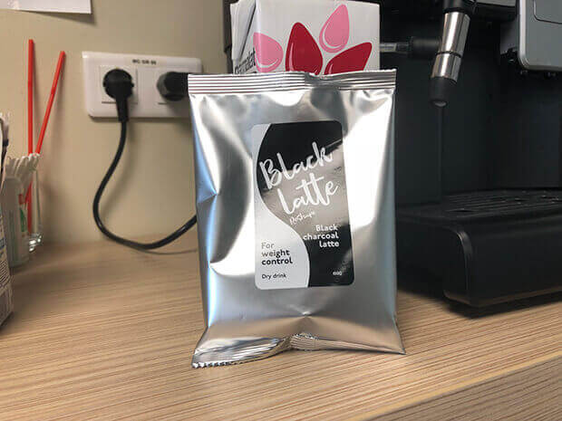

¿Estáis cansadas de esos kilos de más? ¿No conseguís adelgazar? ¿Tal vez volvéis a ganar kilos justo después de perderlos? ¿Tenéis muchas ganas de volver a poneros vuestro vestido favorito, pero no conseguís "meteros" en él y comprar ropa bonita es un gran problema?
"Estoy muy agradecida a todas aquellas personas que me llamaban gorda y me trataban con condescendencia. Si no fuera por vosotros, seguiría siendo igual de gorda", dice María Zabala Serrano que logró adelgazar 26 kg. Probé muchas dietas diferentes en el camino hacia un cuerpo perfecto, pero lo más efectivo resultó ser un método muy simple. María nos ha contado en detalle acerca de este método que hace que los kilos de más no vuelvan nunca. Aquí está su fascinante historia...
Nunca he sido una chica delgada, pero los kilos de más no eran una razón especial para acomplejarme de ello. Después de conocer a mi futuro marido Pablo, empecé a comer incluso más que antes y entré en razón solamente cuando me puse realmente
Cuando conocí a Pablo, empecé a comer incluso más que antes y recobré el sentido solamente cuando me puse realmente gorda
Pablo y yo llevamos más de 7 años juntos y, durante este tiempo, hemos tenido dos hijos. Pero hasta hace poco, teníamos, como dicen ahora, un matrimonio a tiempo parcial. Pablo vivía en su apartamento, trabajaba mucho y venía a verme de vez en cuando. Luego, se iba de nuevo.
Desde el principio de nuestra relación, no dejé de esperar a que él me pidiera matrimonio. ¡Ese era mi sueño!
¿Cuándo me pedirá matrimonio? ¡Ese era mi sueño!
Tras haberme quedado embarazada por primera vez, pensé que nos casaríamos seguro, pero estaba muy equivocada. Pablo seguía haciéndome visitas, mientras que yo no dejaba de esperarle...
Cuando nació nuestro hijo mayor, Pablo y yo estábamos muy felices. Empezó a cuidarnos y a ayudarnos en todo. Sentía lo mucho que nos quería, pero con un amor especial.
Cuando nuestro hijo cumplió 2 añitos, decidimos irnos de vacaciones juntos por 2 semanas. Mar, sol y playa. ¡Echo de menos esas vacaciones!
Un buen hotel en Egipto con una playa solo para nosotros y todo incluido era la opción perfecta para nosotros.
Cuando estábamos en la playa, de repente me di cuenta de que Pablo no dejaba de mirar a una chica. No dije nada, sino que simplemente decidí seguir observándole. Al principio, pensé que se había enamorado a primera vista, pero un poco más tarde, cambió el objeto de su atención y comenzó a observar a otra chica y, luego, a otra, ¡y a otras muchas más!
¡Estaba súper enfadada! Parecía como si mi hijo y yo no existiéramos para él.
¡Resultó ser que le gustaban las chicas flacas!
Nunca quise parecer una tonta celosa, así que, tras haberme calmado un poco, comencé a analizar la situación y rápidamente me di cuenta de que todas esas chicas a las que él había estado observando durante varios días, tenían una cosa en común - ¡eran dos veces más delgadas que yo! Por fin había entrado en razón - ¡le gustaban las chicas flacas! ¿Tal vez por eso se comportaba así en nuestra relación?
Incluso tengo una foto donde me sostiene en sus brazos, pero mira a otra chica "flaca", mirad:
Pablo nunca me había dicho que no le gustaba mi figura. Nunca me había pedido que perdiera peso. Y tampoco me había pedido matrimonio, algo que estaba esperando impacientemente.
Esos pensamientos no me dejaban tranquila, así que me dio por comer para sentirme mejor. Me pasé comiendo allí 2 semanas, el triple de lo que como yo normalmente.
Al volver de vacaciones, me pesé y me quedé de piedra. Volví del soleado Egipto con un bonito bronceado y 9,5 kg de más. Casi me da una psicosis.
Empecé a buscar por todo Internet algún método para perder peso y, unas semanas después, ¡me di cuenta de que estaba embarazada por segunda vez! Las vacaciones habían sido fructíferas en el verdadero sentido de la palabra. Está claro que en ese estado no podía perder peso...
No dejaba de pensar en que no le gustaba a Pablo como mujer
No dejaba de pensar en que no le gustaba a Pablo como mujer. Incluso estaba dispuesta a hacerme un aborto. Estoy muy contenta de que Pablo me haya prohibido siquiera pensar en ello.
Así es cómo tuvimos un segundo hijo. Y todo volvió a ser como antes. Pablo nos rodeó de su amor, cuidado y atención, pero solo durante las horas que estaba con nosotros. En mi piso no había ni una sola cosa suya, excepto un cepillo de dientes. Para evitar pensar en todo eso, dediqué todo mi tiempo a los niños.
Después de dejar de dar el pecho, sentí que los pensamientos sobre adelgazar volvían a mí cada día. No conseguía olvidar esas vacaciones cuando veía cómo Pablo no podía quitarles los ojos de encima a esas chicas delgadas, mientras que en nuestra relación no cambiaba nada. En aquel entonces, pesaba esos odiosos 88 kg.
En aquel entonces, pesaba esos odiosos 88 kg. ¡Y por fin decidí adelgazar!
¡Y por fin decidí adelgazar! Lo probé todo: unas 10 dietas, todo tipo de entrenamientos, envolturas, saunas, masajes especiales, etc. Todo eso o bien no ayudaba nada, o bien ayudaba temporalmente. Tan pronto como se iban esos kilos de más, regresaban en un abrir y cerrar de ojos.
Un día, en el supermercado, en la sección de pastelería, me encontré con Laura, una chica que conocí en el hospital cuando di a luz a mi segundo hijo. Apenas la reconocí - era casi el doble que yo, pero cuando la vi, ¡¡¡estaba 3 veces más delgada que después del parto!!!
- ¡Increíble! - exclamé emocionada en lugar de saludar. - ¡Te miro y no me lo puedo creer! Laura, ¿eres realmente tú?
- He adelgazado un poco, ¿verdad? - preguntó ella sonriendo, comprando pasteles.
- ¡¿Y encima comes dulces?! ¿Cómo lo haces? ¿¿¿Cómo??? He probado hacer deporte, ponerme a dieta y todo tipo de saunas. ¡No sabes todas las cosas inútiles que he probado! Como mucho pierdo 3 kg por semana, ¡pero luego gano 7 así porque sí! - dije yo casi gritando. Recuerdo ese momento porque la gente comenzó a girar la cabeza hacia mí.
- María, ¿de qué dietas y saunas estás hablando? En fin, sé lo que tienes que hacer. Vamos a mi casa para tomarnos un café mientras mi marido está en el trabajo y mi hijo en la guardería. Yo - con los pasteles, y tú - también, - exclamó Laura con los ojos entrecerrados, - y ya te contaré y te mostraré todo, e incluso te daré que lo pruebes.
- María, ¿de qué dietas y saunas estás hablando?
Estaba increíblemente intrigada y acepté inmediatamente. Es más, Pablo se iba de viaje de negocios para 2 semanas al día siguiente, así que dedicó todo el día anterior a los niños. Y yo podía relajarme un poco.
Laura perdió 33 kg en 3 meses y medio después de terminar de dar el pecho. No estaba a dieta, no se moría de hambre y no iba al gimnasio. Llevaba un estilo de vida normal y comía todo lo que quería.
Su cuerpo se volvió tan delgado como el de una adolescente. Por muy extraño que parezca, una pérdida de peso tan repentina no dejó ni una sola estría en su piel. En aquel entonces, pensé que mi Pablo se la comería con sus ojos.
Experimenté una emoción súper intensa después de descubrir lo fácil que ella había perdido peso. Es más, cualquiera puede adelgazar de forma simple y segura. ¡Su receta para bajar de peso me dejó con la boca abierta!
Recordaba muy bien por lo que tuve que pasar tratando de perder peso. ¡Era un infierno! Recordaba la depresión que tenía después de ponerme a dieta, cómo discutíamos con Pablo constantemente, recordaba cómo quería mandarlo todo a la mierda y comenzaba a comer sin parar. Y me odiaba por eso.
Incluso me sentía un poco mal por el hecho de que había pasado por todo eso y porque todo había sido en vano vano, ya que al fin y al cabo, tenía que haber empezado a adelgazar de forma completamente diferente. Pero no me puse muy triste porque sabía qué hacer exactamente.
Ahora, ¡escuchad atentamente lo que me dijo Laura!
El producto más efectivo para perder peso es carbón activado. Una vez que entra en el cuerpo, elimina las sustancias tóxicas mediante dos mecanismos. En primer lugar, debido a la adsorción y a su estructura porosa. En segundo lugar, debido a la reducción catalítica (un proceso que hace que los iones contaminantes cargados negativamente se atraigan a los iones de carbono cargados positivamente).
El carbón activado une toxinas en el cuerpo humano y, debido a la unión de sus moléculas, las elimina rápidamente a través de los intestinos.
Curiosamente, la mayoría de las propiedades beneficiosas del carbón activado fueron descubiertas por los habitantes de la antigua India y China que lo utilizaban para purificar el agua y, posteriormente, hacer bebidas y vino. Pocos siglos después, los nutricionistas denominaron el carbón activado uno de los mejores productos para la desintoxicación del cuerpo.
Cuando llegamos a casa, Laura nos hizo un latte poco común - era negro. Al principio, me sorprendió, pero el sabor de la bebida resultó ser prácticamente idéntico al del café con leche normal y corriente con una densa espuma - estaba muy rico.
"Este es el secreto de mi pérdida de peso - el latte de carbón Black Latte", dijo Laura y me mostró un paquete con polvo negro que usó para hacer la bebida
"Este es el secreto de mi pérdida de peso - el latte de carbón Black Latte ", dijo Laura y me mostró un paquete con polvo negro que usó para hacer la bebida. No hay que comprar ninguna máquina de café especial para hacerlo. Simplemente hay que echarlo en una taza con agua hirviendo y ya está.
Basta con tomarlo una vez al día, preferiblemente por la mañana. De esta forma, todas las calorías de más que van a llegar a lo largo del día no se almacenarán en forma de grasa. ¿Os lo podéis imaginar? ¡Es un sueño!

- ¡No puede ser verdad! ¿Acaso es tan fácil? - murmuré entonces.
- Creer o no es, por supuesto, cosa tuya. Si te gustan las dificultades, no entiendo para qué has venido entonces. ¿Querías saber cómo conseguí adelgazar? Ya te lo he dicho y, ahora, haz lo que quieras. No soy un vendedor y no tengo la intención de venderte nada. Si quieres - pruébalo. Si no - sigue tomándote agua, incluso puedes dejar de comer por completo. Por cierto, ¿quieres un pastel? - preguntó Laura, ofreciéndome mi postre favorito.
- No, gracias. Es mejor que me vaya.
En aquel entonces, no sabía que esa hora y media iba a dar un giro a mi vida...
Intercambiamos números de teléfono y me fui. Pasé una hora y media en casa de Laura. En aquel entonces, no sabía que esa hora y media iba a dar un giro a mi vida...
Fui corriendo a casa. Encendí el portátil y pedí Black Latte en el sitio web que me dio Laura. ¡En 3 días el paquete tan esperado ya estaba en mis manos!
Me pesé. La báscula mostraba 88,4 kg. A partir de ese momento, cada mañana me tomaba una taza de latte.
A la mañana siguiente, me subí de nuevo a la báscula - 88,5 kg. ¡100 gramos más! ¡Decir que estaba frustrada es no decir nada! Casi entro en pánico.
Llamé a Laura.
- María, cálmate. El peso comienza a bajar a los 4-5 días. Simplemente sigue tomándotelo y ya está. Olvídate de la báscula 5 días. Luego, cuando te peses de nuevo, verás qué pasa, respondió Laura con intriga.
Seguí tomándome el latte. Sin cambiar nada en mi dieta, cada día me tomaba una taza de Black Latte por la mañana - tenía mucha curiosidad por saber qué pasaría después. Seguía sin poder creer que realmente iba a comenzar a perder peso sin cambiar mi dieta diaria ni mi estilo de vida.
Al sexto día, por la mañana, me acerqué a la báscula tambaleándome de la emoción que tenía, me subí y cerré los ojos. Me daba mucho miedo mirar, pero después de un par de segundos, abrí bruscamente los ojos. La báscula mostraba 83,3 kg.
¡Perdí 5 kilos y 100 gramos en los primeros 5 días sin cambiar mi dieta diaria ni hacer ejercicio!
Memoricé esos primeros números de mi éxito. ¡Era increíble! Mi corazón estaba a punto de salir del pecho, ¡y yo prácticamente no podía respirar de la emoción! ¡¡¡Lo conseguí!!!
La próxima semana, mi menú seguía siendo el mismo de siempre, a excepción de que cada día me tomaba una taza de mi querido Black Latte .
Me aguantaba para no pesarme, pero incluso sin la báscula, sentía que bajaba de peso. A veces, experimentaba una sensación de calidez agradable en mis brazos, estómago y muslos. Empecé a tener mucha energía que no había tenido desde hace mucho tiempo. Además, empecé a sentirme mucho menos cansada que antes.
Tras pesarme una semana después, casi me desmayo. La báscula mostraba 74,7 kg. Es decir, ¡durante la próxima semana adelgacé casi 9 kg!
¡En 12 días me volví 13 kilos y 700 gramos más delgada!
Simplemente imaginad que acabáis de adelgazar. Imaginad cómo os sentís. Sentid lo orgullosas que estáis de vosotras mismas, cómo os gusta vuestro reflejo en el espejo, y entonces entenderéis lo que sentí yo.
Por supuesto, sentí que mi ropa comenzó a estar algo más "holgada", ¡pero no podía creer que iba a ser posible perder 14 kg en menos de 2 semanas!
Faltaban 2 días para que Pablo volviese de su viaje de negocios. Volaba de un lado a otro como si tuviera alas, imaginando cómo reaccionaría a mi cambio. Los niños también esperaban a su padre con ganas de regalos que él siempre les traía de sus viajes de negocios.
El día de la llegada de Pablo, organizamos una cena especial - preparamos un montón de comida deliciosa e incluso, por primera vez en muchos años, cociné su pastel favorito llamado Torta de Cielo. ¡Ya prácticamente no tenía miedo de comer dulces!
Pablo llegó justo a tiempo para cuando acabamos de poner la mesa. Los niños, después de escuchar cómo se abría la puerta, corrieron al pasillo para encontrarse con su padre.
La puerta se abrió, y allí estaba Pablo, con un gran ramo de flores y un montón de cajas con regalos para los niños. Los chicos se abalanzaron sobre él, y Pablo, tras verme por encima de las cabezas de los niños, se quedó estupefacto. Las cajas que tenía en sus manos cayeron al suelo. El ramo cayó con ellos.
Los niños saltaban de felicidad, arrastrando las cajas, y Pablo, incapaz de apartar los ojos de mí, se inclinó para recoger el ramo.
Después de unos segundos, nos quedamos solos en el pasillo. Pablo no se movía, parecía que estaba hechizado. Me eché a reír, cogiendo las flores de sus manos.
- ¿Qué te pasa? ¡Entra a casa!
- Tú... Cómo... ¿Cómo es posible? - Pablo no se lo podía creer.
- Bueno, ¿me vas a besar o no? ¿O prefieres quedarte ahí parado?
De repente, Pablo me agarró, me levantó y comenzó a besarme, y yo me reí aún más. Brillaba de alegría - pude sentir lo mucho que le gustaba.
- Basta, basta, bájame. Lávate las manos y a comer.
Pablo parecía otra persona esa tarde y, cuando los niños se quedaron dormidos, se abalanzó sobre mí como si fuera la primera vez. Fue una noche de amor loco que no tuve desde hace siglos - no me había sentido tan deseada desde hace muchos años. Completamente agotados, nos quedamos dormidos al amanecer.
A la mañana siguiente, Pablo ofreció irnos todos juntos a la playa para 10 días. Al parecer, cerró un trato exitoso en el trabajo y, como recompensa, le dejaron irse de vacaciones. Además, le pagaron una buena bonificación.
Yo estaba en el séptimo cielo - ¡no había tenido una mañana tan buena desde hace mucho, mucho, tiempo!
En ese momento, trabajaba como contable y dirigía varias empresas, trabajando principalmente desde casa. No tenía previsto nada importante, así que podía irme de vacaciones para 1-2 semanas sin ningún problema. Por lo tanto, acepté su invitación sin pensármelo. ¡Los niños también estaban como locos porque tenían muchas ganas de playa!
Esta vez, la elección recayó en Túnez. Era una suite de dos habitaciones en un hotel muy bueno de 4 estrellas. Pillamos un viaje con todo incluido, ¡así que era una excelente prueba para mi receta secreta! Y, por supuesto, estaba impaciente por ver el comportamiento de Pablo durante las vacaciones.
Toda su atención estaba centrada solo en mí. Sí, ¡esa era mi pequeña victoria personal!
Una semana después, ya estábamos disfrutando de una cálida playa tunecina, de un mar increíblemente claro y del sonido de las olas. Pablo no me quitó los ojos de encima y no me dejó ni por un minuto. Toda su atención estaba centrada solo en mí. No había mirando a nadie más. Sí, ¡esa era mi pequeña victoria personal!
Comíamos todo lo que queríamos, y en la cantidad que queríamos. Carne, patatas, cerveza, huevos revueltos con tocino, bollos, pasteles - mi dieta incluía un juego completo de ''todo incluido'' tunecino. Comía muy poco porque la verdad es que no tenía muchas ganas. Por supuesto, cada mañana no me olvidaba de mi taza de Black Latte .
Y, por la tarde, después de que los niños se quedasen dormidos tras pasar todo el día jugando y nadando en la piscina, Pablo y yo bebíamos vino estando de pie abrazados en el balcón de nuestra habitación, hablando de cosas y mirando la luna llena. Luego, Pablo me tomaba en brazos y me llevaba al dormitorio donde hacíamos el amor con tanta pasión que no habíamos tenido desde que nos conocimos. Y así era todos los días. ¡Me sentía como una diosa!
La última noche, antes de irnos, de pie en el balcón, Pablo me pidió misteriosamente que cerrara los ojos. Los cerré y lo oí entrar rápidamente en la habitación y, después, volver.
- ¡Ábrelos! - dijo Pablo un poco nervioso.
Abrí los ojos. Delante de mí estaba Pablo, de rodillas. En sus manos sostenía un anillo de oro.
- María, ¿quieres casarte conmigo? Casi me desmayo. ¡Llevaba 7 largos años esperando eso!
Soñaba con ese momento cada día y me imaginaba cómo me lo iba a decir. Sentí cómo las lágrimas comenzaron a caer rápidamente por las mejillas.
- ¿Estás bromeando? - en aquel entonces, no fui capaz de decir nada más inteligente.
- ¡Ni una pizca! Eres la mejor y la más guapa del mundo, quiero que seas mi esposa. ¡Lo digo en serio! Ya no quiero ir y venir. ¡Quiero que siempre estemos juntos!
Me eché a llorar y abracé a Pablo, susurrando entre lágrimas: "¡Sí, quiero!"
Inmediatamente después de llegar a casa, fuimos al registro civil.
Me olvidé completamente de mi peso. Durante los 10 días de descanso con todo incluido y Black Latte, perdí 7,5 kg.
Con lo del matrimonio, me olvidé completamente de mi peso. Me pesé solamente después de volver. Esta vez, durante 10 días de descanso con todo incluido y Black Latte , perdí 7,5 kg. Por supuesto, no perdía 1 kg al día como al principio, pero hay que tener en cuenta que estando de vacaciones no comía de la misma manera que siempre.

Desde entonces, ya ni siquiera intenté perder peso. Comencé a tomar Black Latte cada dos días. Pero, a pesar de eso, perdí otros 5 kg para el día de la boda.
Nuestra alianza con Pablo fue muy divertida. Laura fue mi testigo - nos hicimos muy buenas amigas durante todo ese tiempo. Le estoy inmensamente agradecida por haber compartido su receta para adelgazar tan simple.
Pablo me confesó que, en secreto, siempre quería que fuese delgada
Después, Pablo me confesó que mi transformación lo volvió loco. Dijo que, en secreto, siempre quería que fuese delgada y que no dejaba de imaginarme con el cuerpo que tengo ahora. Por supuesto, nunca me lo había dicho porque no quería ofenderme. Al fin y al cabo, ¡él es muy sensible conmigo!

P.S. Pablo y yo ya llevamos 3 meses siendo oficialmente marido y mujer, y estamos pensando en vender nuestros dos apartamentos para comprar uno común que sea más grande, más amplio y más cómodo.
Ahora, peso 62 kilos y 300 gramos, y mi peso no aumenta a pesar de que llevo un mes sin tomar Black Latte . Al final, he perdido 26 kilos y 100 gramos e incluso después de más de 7 años de relación con Pablo, sigo sintiéndome la mujer más querida del mundo. ¡Es una sensación fantástica que me he merecido!
He perdido 26 kilos y 100 gramos. ¡Mi sueño se ha hecho realidad!
¡Mi sueño se ha hecho realidad! ¡Y todo resultó ser incluso mucho mejor de lo que había soñado! Sí, es cierto que me ayudó el caso con Laura, pero era solo una oportunidad que había aprovechado.
Cada uno de nosotros tenemos dichas oportunidades en la vida aunque haya que esperar mucho. Lamentablemente, muchas personas las pierden por los interminables problemas de la vida cotidiana, la falta de dinero y la desconfianza de todo.
Intentad ver vuestra oportunidad siempre y en todo: en cualquier evento a vuestro alrededor, en personas que por alguna razón se hayan puesto en vuestro camino, en historias que por alguna razón llamaron vuestra atención y que leéis - ¡en todo! Y, cuando la hayáis reconocido - ¡agarradla con todas vuestras fuerzas! Precisamente este es el secreto para lograr la verdadera felicidad. Tras aprovechar vuestra oportunidad, veréis que vuestra vida será mucho mejor de lo que os habíais imaginado.
Cuando escuché a Laura, yo también pensé que era imposible al principio. Pero, aún así, probé su receta, Black Latte , porque no podemos conocer todo de antemano. Al fin y al cabo, podría simplemente sonreír escépticamente y seguir adelante. ¡Y entonces nada hubiera cambiado! Además, ni siquiera sabría que había perdido mi oportunidad...
Para aquellas de vosotras que habéis decidido ser felices, bellas, atractivas y eternamente deseadas, haré lo mismo que Laura hizo por mí cuando vine a visitarla. Os enseñaré dónde encontrar el sitio web del fabricante de Black Latte del que me habló ella. Simplemente haced clic en el botón verde con las palabras "IR AL SITIO WEB DEL FABRICANTE" que veréis más abajo y se abrirá. Todo lo demás está en vuestras propias manos.
Elena:
¡Tenías que comer menos desde el principio!
Comentar
Princesa:
¡Es culpa tuya! No sé cómo es posible engordar hasta los 90 kg. Ahora entiendo por qué tu hombre miraba a otras. Yo no estaba tan gorda como tú, pero con Black Latte también he perdido peso. ¡8 kg menos en un par de semanas! Perfecto. ¡Ni una solo estría! ¿¿¿Para qué la gente se tortura con dietas y envolturas???
Comentar
Daniela Vázquez:
pues sí, primero engordas hasta parecerte una cerda y luego te preguntas por qué nadie te pide matrimonio. está claro que a todos los tíos les gustan las chicas flacas.
Paula Fernández:
Después de pasar horas leyendo historias parecidas, he llegado a la conclusión de que todo el mundo no ve lo obvio en el espejo. De ahí el problema. Yo también me puse muy gorda y luego también estuve tomándome Black Latte . El resultado - 19 kg menos. Muchos empiezan a torturarse con el hambre o el deporte porque no creen en la eficacia de otros métodos. Nunca lo sabrán hasta que lo prueben.
Comentar
Julia:
casi lloro al leer cómo le pidió matrimonio, ¡es genial cuando hay tanto amor en una pareja!
Comentar
Celia Valero:
¡Qué guay! ¡Me encantaría lucir así después del segundo parto! ¡Te ves muy bien!
Comentar
Elvira:
Tengo una pregunta: ¿todo el mundo puede tomar Black Latte ? El caso es que mi madre tiene 56 y no sé si se va a sentir mal después de tomarlo…
Comentar
Lorena:
Elvira, mi madre también perdió 12 kg con esa bebida a los 59 años - se ha vuelto igual de delgada que yo. No te preocupes, no tiene efectos secundarios, es 100% natural.
Comentar
Víctor Lafuente:
Mi mujer y yo perdimos peso juntos tomando Black Latte . Ella lo pidió justo cuando salió a la venta en España. Como resultado, ha perdido 13 kg, y yo - 18. Ahora parece una modelo, no le cuelga nada en ningún lado. Qué pena que ya no haya quedado ni rastro de mi barriga cervecera, ¡la echo de menos!
Comentar
Marina Santos:
Víctor, ¿no recuerdas dóndo lo pidió tu mujer? Al principio, todo parece ser bueno, pero luego, con el tiempo, aparecen falsificaciones, estafadores, etc.
Comentar
Víctor Lafuente:
Lo pidió en el sitio web del fabricante. Debajo del artículo hay un botón verde. Aquí está el enlace: haz clic aquí y se te redirigirá al sitio web que necesitas .
Comentar
Nerea:
Es genial que ahora puedas comer todo tipo de cosas ricas sin preocuparte que al final de la semana no puedas ponerte tus vestidos y faldas :) ¡No tengo palabras!
Comentar
Irene Barranquero:
Perdí 12 kilos el primer mes, otros 8 - el segundo, y ahora estoy terminándome otro paquete más de Black Latte . Creo que cuando me lo acabe, el peso total perdido será de unos 25 kilos. Creo que es un buen resultado en menos de tres meses. No creáis en la tontería de que es imposible perder peso sin dietas.
Comentar
Noelia Serrano:
Irene, ¿puedes subir unas cuantas fotos de cómo estabas antes y cómo estás ahora? ¡¡¡estoy muy interesada!!!
Comentar
Irene Barranquero:
Claro, sin ningún problema. Este es un collage de dos fotos de antes y después que hice con el móvil.
Comentar
Noelia Serrano:
Vaya, ¡¡¡gracias!!! ¡¡¡Antes tampoco estabas nada mal!!!
Comentar
Irene Barranquero:
Díselo a mi marido que se fue hace seis meses y luego volvió un mes después. Cuando le pregunté por qué había vuelto, él respondió que nunca sería capaz de volver a dejar a una mujer como yo y que ni siquiera podría pensarlo
Comentar
Carolina:
Perdí solo 9 kilos en un mes y me puse muy triste porque esperaba perder más. Creo que lo de perder 15-20 al mes es más bien un rumor.
Comentar
Ana:
Pues a mí me gusta que la pérdida de peso pase gradualmente y no dañe el cuerpo. Pierdo 3-4 kg a la semana. ¡En un mes ya he perdido 12! No es poco, ¡¡¡así que no me puedo quejar!!!
Comentar
Esther Casado:
Ayer recibí Black Latte . ¡Después de tomarme una taza, entendí que no quería comer en absoluto! Bloquea la sensación de hambre. Ahora, a esperar los resultados. Ojalá que al menos pierda 200 gramos al día.
Comentar
Alicia:
Esther, ¿puedes enseñarme cómo se ve realmente el paquete?
Comentar
Esther Casado:
Por supuesto, mira
Comentar
Pilar:
Yo tuve una mala experiencia con Black Latte . No me lo voy a tomar más y no se lo aconsejo a nadie. Quería perder 1-2 kilos, pero al final se fueron casi 7. No necesitaba perder tanto, pero eso no dependía de mí en absoluto - perdía peso comiendo o no. Ahora estoy tratando de ganar unos cuantos kilos.
Comentar
Soledad:
Gente, ¿por qué tanta ira? Hay que comer menos, la culpa es tuya, te has puesto como una cerda, etc. Cuando te ves en el espejo todos los días, es posible que no notes cómo cambias. Estoy de acuerdo con la persona que dijo que en el espejo no siempre ves lo obvio. Entiendo a María. Al contrario, me alegro por ella. Simplemente no sabía que se puede perder peso fácilmente, teniendo en cuenta que ahora escriben tantas cosas sobre diversos métodos para adelgazar. Prácticamente el 80-90% de ellos no funcionan. ¿Qué podía hacer? Ella no sabía que Black Latte es tan eficaz. Y no solo ella, muchos aún no lo saben.
Comentar
Albina Ferrant:
¿Quién no sabe? Mi vecina comenzó a beber este latte a principios de diciembre pasado. ¡Celebró el Año Nuevo en un vestido que se puso para su graduación hace 10 años! En un mes perdió 12 kilos. Nuestros maridos no podían quitarle los ojos de encima, incluso comenzamos a ponernos celosas.
Comentar
Rocío Mendoza:
Qué suerte ha tenido ella con Pablo. María tenía que haber empezado a adelgazar hace mucho tiempo. Está claro que tiene la culpa de haber ganado kilos de más. ¡Que se calle cuando dice que no le gusta que su hombre mire a otras mujeres! Obviamente le gustan las chicas delgadas, ¿qué se ha creído ella? Tiene que estar agradecida a su marido por el hecho de que no la haya dejado. Alex tiene razón, Black Latte lo conoce todo el mundo. Y, los que no, será porque les da igual estar gordos. Los que querían adelgazar, ya lo han hecho con su ayuda hace mucho tiempo. ¡Y aquí la cosa no va de creer o no!
Comentar
Comentar
Comentar
enviar